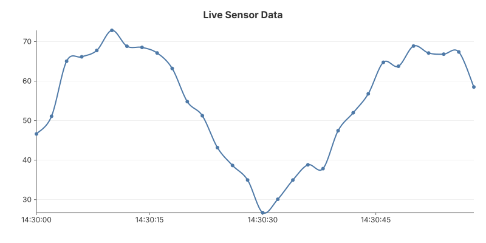

06 — Live SSE
Real-time chart updates via Server-Sent Events. The server pushes a re-rendered SVG every 2 seconds as new data arrives. The browser replaces the chart with a single EventSource listener — no polling, no WebSocket, no HTMX.

The pattern
Server: SSE endpoint
The /events handler keeps the connection open and pushes a new SVG each tick. The data window slides — only the last 30 points are kept.
http.HandleFunc("/events", func(w http.ResponseWriter, r *http.Request) {
w.Header().Set("Content-Type", "text/event-stream")
w.Header().Set("Cache-Control", "no-cache")
flusher := w.(http.Flusher)
tick := time.NewTicker(2 * time.Second)
defer tick.Stop()
var points []gogal.DataPoint
for {
select {
case <-r.Context().Done():
return
case now := <-tick.C:
points = append(points, gogal.DataPoint{Time: now, Y: newValue()})
if len(points) > 30 {
points = points[len(points)-30:]
}
chart := gogal.NewLineChart(
gogal.WithVariant(gogal.Static),
gogal.WithTitle("Live Sensor Data"),
gogal.WithGrid(true),
gogal.WithSmooth(true),
)
chart.Add("Sensor", points)
var buf bytes.Buffer
chart.Render(&buf)
// SSE format: each line prefixed with "data:"
svg := strings.ReplaceAll(buf.String(), "\n", "\ndata:")
fmt.Fprintf(w, "data:%s\n\n", svg)
flusher.Flush()
}
}
})
Full SVG replacement — each SSE event contains a complete SVG. The chart is small (~2-5 KB) so this is efficient and avoids the complexity of incremental DOM patching. The browser simply replaces innerHTML.
Sliding window — keeping the last 30 points prevents unbounded memory growth and keeps the chart readable. The time axis auto-scales to the visible window.
Client: EventSource
<div id="chart"></div>
<script>
const source = new EventSource('/events');
source.onmessage = function(e) {
document.getElementById('chart').innerHTML = e.data;
};
</script>
Three lines of JavaScript —
EventSource handles reconnection automatically. If the server restarts, the browser reconnects and the chart resumes.
Running it
task example:06
Serves at http://localhost:1345. The chart starts empty and fills in over ~60 seconds.